Полупроводничка индустрија и Србија
— међусобна (не)повезаност —
Владимир Миловановић
vlada@kg.ac.rs
Центар за интегрисане системе
Катедра за електротехнику и рачунарство
Факултет инжењерских наука Универзитета у Крагујевцу
О мени
Образовање:
- Дипл. ел. инж. — ЕТФ у Београду, 2005.
- Др — Технички универзитет у Делфту, 2010.
Академско искуство:
- 2011-13. - Технички универзитет у Бечу
- 2014-15. - Калифорнијски универзитет, Беркли
Тренутно:
- ванредни проф. — Универзитет у Крагујевцу
- оснивач, власник и директор једног стартапа
Шта су то полупроводници?
— (н)и изолатори (н)и проводници —
Полупроводник је материјал који има нека својства проводника и својства изолатора.
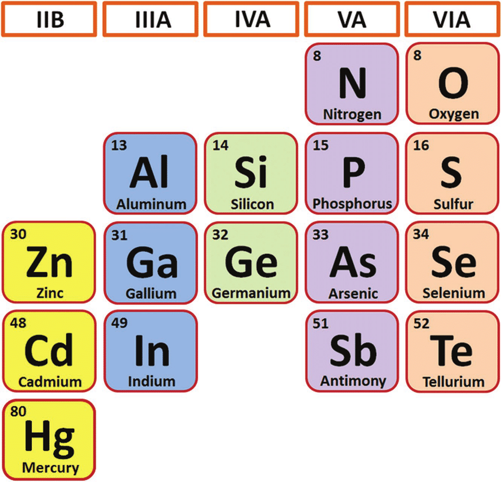
Шта су то полупроводници?
— (н)и изолатори (н)и проводници —
Полупроводник је материјал који има нека својства проводника и својства изолатора.
Транзистор — двојака употреба
Несумњиво најзначајнија полупроводничка направа
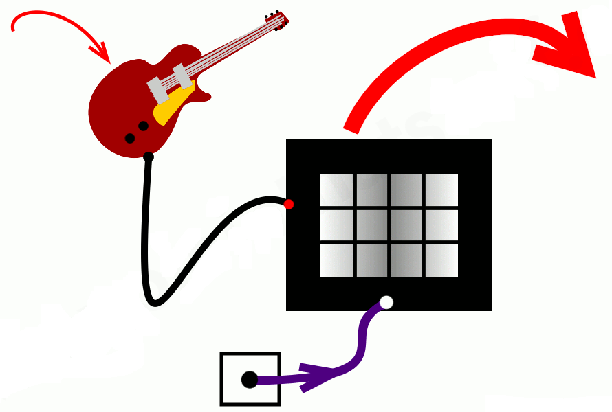
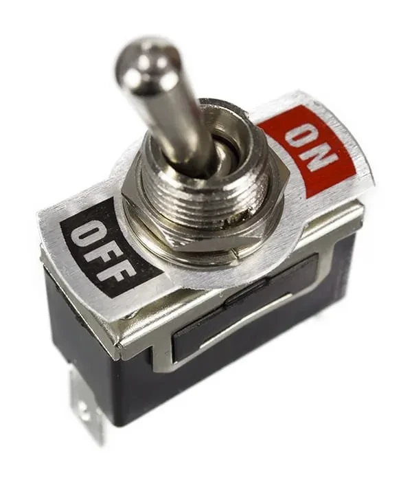
Транзистор као појачавач (сигнала) и као (електрично контролисани) прекидач.
Интегрисана (електрична) кола
Више (милијарди) транзистора на једном чипу.
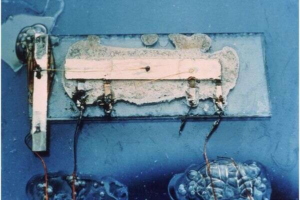
Прво интегрисано коло из 1958. — Џек Килби, Нобелова награда за физику 2000.
Савремена интегрисана кола
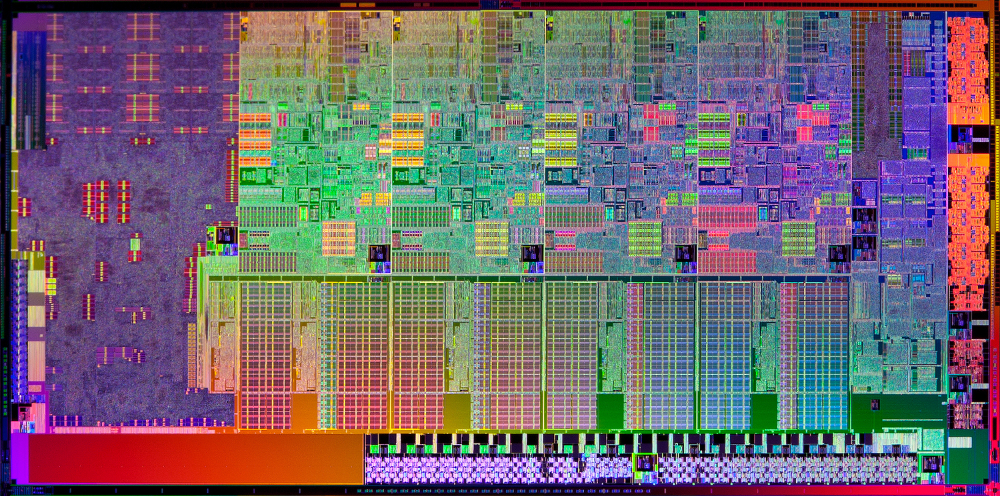
Четворојезгарни Intel Sandy Bridge микропроцесор из 2012. године
Савремена интегрисана кола
Intel Core i9 13900K Raptor Lake микропроцесор из 2022. године
Полупроводничка индустрија
Како од песка стићи до транзистора и интегрисаних кола...
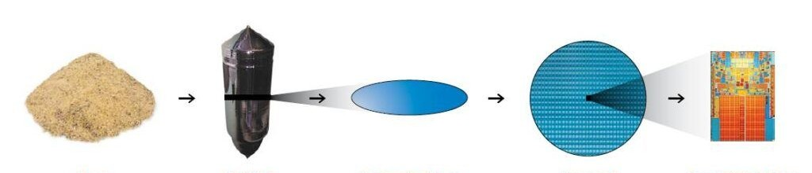
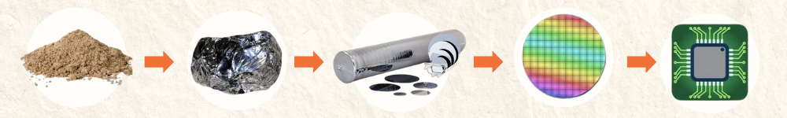
Најнапреднији поступак масовне производње.
Пројектовање + произовдња = чип
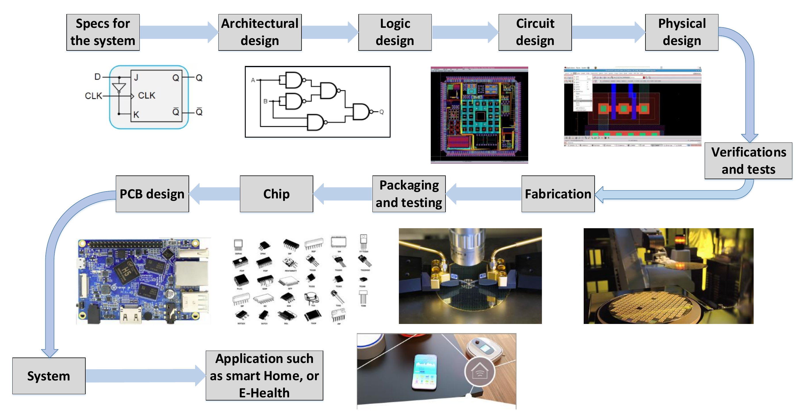
A. Shamsoshoara, A. Korenda, F. Afghah, S. Zeadally, A Survey on Physical Unclonable Function (PUF)-based Security Solutions for Internet of Things, arXiv:1907.12525
Приходи полупроводничке инд.
Годишњи приходи од продаје у 2024.
| индустрија |
приход |
однос |
| полупроводничка |
0,63Б$ |
1x |
| софтверска |
0,73Б$ |
1,15x |
| авио |
0,99Б$ |
1,6x |
| фармацеутска |
1,64Б$ |
2,5x |
| аутомобилска |
4,4Б$ |
7x |
| нафтна и гасна |
6,1Б$ |
9,5x |
| банкарска |
7Б$ |
11x |
Тржишна капитализација пп инд.
Вредности на јавном тржишту акција
| индустрија |
приход |
однос |
| полупроводничка |
9,5Б$ |
1x |
| софтверска |
15Б$ |
1,5x |
| авио |
0,3Б$ |
0,03x |
| фармацеутска |
6,5Б$ |
0,7x |
| аутомобилска |
3Б$ |
0,3x |
| нафтна и гасна |
7Б$ |
0,75x |
| банкарска |
13Б$ |
1,4x |
Однос цене и продаје пп инд.
Јавни капитал/приходи за 2024.
| индустрија |
однос Ц/П |
| полупроводничка |
15x |
| софтверска |
20x |
| авио |
0,3x |
| фармацеутска |
4x |
| аутомобилска |
0,7x |
| нафтна и гасна |
1,15x |
| банкарска |
1,85x |
Објашњење "парадокса"
Приход рангира индустрије по данашњем обиму продаје, а тржишна капитализација рангира индустрије по садашњој вредности очекиваног профита који ће доћи у будућности.
Дакле, индустрија може бити „мала“ по приходима, али „огромна“ по тржишној вредности ако инвеститори мисле да ће се сваки долар од њене продаје претворити у велики трајан, брзорастући новчани ток.
Tржиште нам говори да полупроводници имају супериорну економију и изгледе за будући раст.
Стратешки значај ПП индустрије
Сваки дигитални уређај има чип(ове) у себи те контрола полупроводничке индустрије има практичан утицај на све остале индустрије.
- Одбрана и национална безбедност.
- Геополитички утицај кроз ланце снабдевања.
- Лидери у чиповима воде и у иновацијама.
- Екстремно тежак и захтеван улазак у игру превасходно услед недостатка образованих кадрова, високих улагања и дуготрајног процеса изградње кључне инфраструктуре.
Законодавци и законодавство
- САД: CHIPS and Science Act, август 2022.
- "Creating Helpful Incentives to Produce Semiconductors" for America Act
- 280 милијарди долара за истраживање и производњу полупроводника на тлу САД
- ЕУ: European Chips Act (ECA), септембар 2023.
- 43 милијарде евра с циљем подизања удела у производњи са 10 на 20% до 2030. године
- И други: Кина, Индија, Јапан, Кореја, Тајван, Вијетнам, Малезија, Сингапур, УК, Канада,...
Дешавања из суседства
- Позив ЕК за отварање тзв. Chips Competence Centre (CCC) у свим државама чланицама ЕУ
- Кроз средства ECA Хрватска 1. марта оснива:
- И Словенија преко Fakulteta za elektrotehniko
- Slovenski kompetenčni center za čipe in polprevodniške tehnologije - CC Chip/KC Čip.SI
- Други отварају своје центре компетентности: Бугарска, Румунија, Мађарска, Грчка, Малта,...
Пројектовање и производња
Полупроводничка индустрија се састоји из пројектовања и производње интегрисаних кола.
Половина укупних прихода је у пројектовању, а заправо носи и већински део профита, само Nvidia је у 2024. приходовала 124 милијарде $.
У производњу улази и паковање и тестирање (Outsourced Semiconductor Assembly and Test).
Србија и њено место
Историјски смо стајали јако добро кроз Еи Ниш
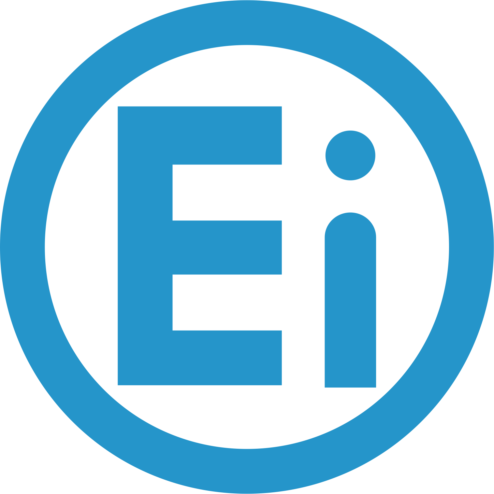
Електронскa индустријa Ниш у стечају од 2016.
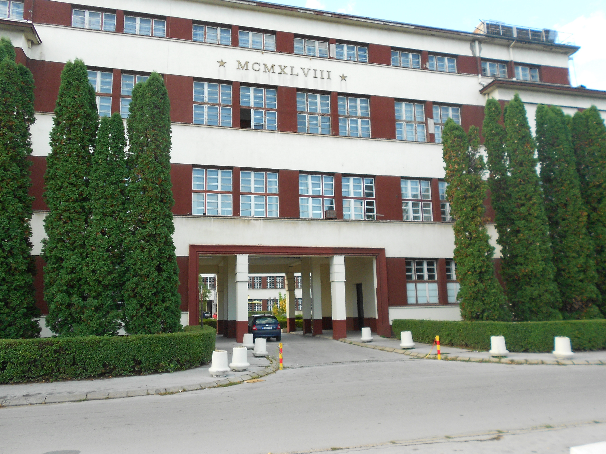
Дијаспора — наш најјачи адут
Редовни професори на најбољим светским универзитетима у области интегрисаних кола
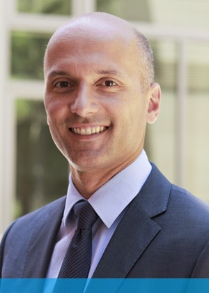
- Боривоје Николић
- Владимир Стојановић
- Дејан Марковић
- и још многи други...
Преко хиљаду електроинжењера запослених само у САД, највећи број њих у Силицијумској долини, неки чак и на руководећим местима.
Факултети и институти — очајни
Поткрепљујуће чињенице:
- Иако курсеви из пројектовања интегрисаних кола и система постоје, њих махом не предају наставници с личним искуством у области.
- Нема чипова који садрже више транзистора, а испројектовани су у академским установама.
- На водећим међународним научним и стручним скуповима и конференцијама у области чипова нема српских афилијација.
- По мом мишљењу, стање је забрињавајуће...
Привредна (не)активност
Искључиво мање фирме, у страном власништву:
- Највеће фирме до пар стотина запослених...
- Нема српских полупроводничких производа.
- (Не)Занемарљив ниво интелектуалне својине.
- Оно мало што постоји, не доноси профит.
- Услуге, тј. изнајмљивање инжењера на сат...
- Већински верификација, мање пројектовање.
- Хроничан проблем с недостатком кадрова (наслеђен услед недовољно студената).
(Не)успешни покушаји - подсетник
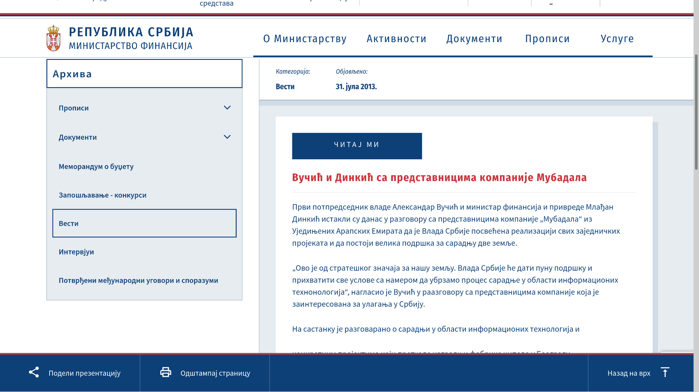
(Не)успешни покушаји - подсетник
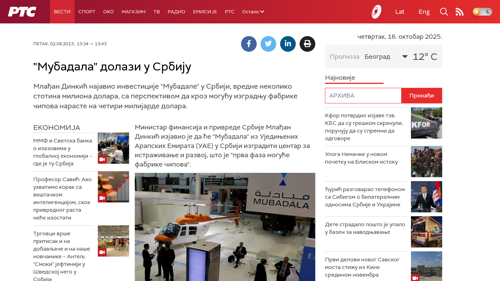
(Не)успешни покушаји - подсетник
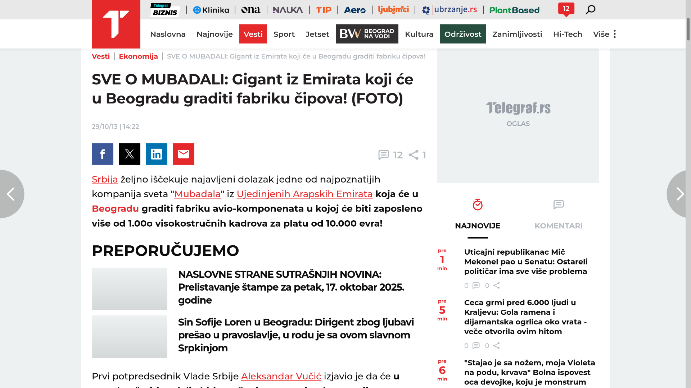
(Не)успешни покушаји - подсетник
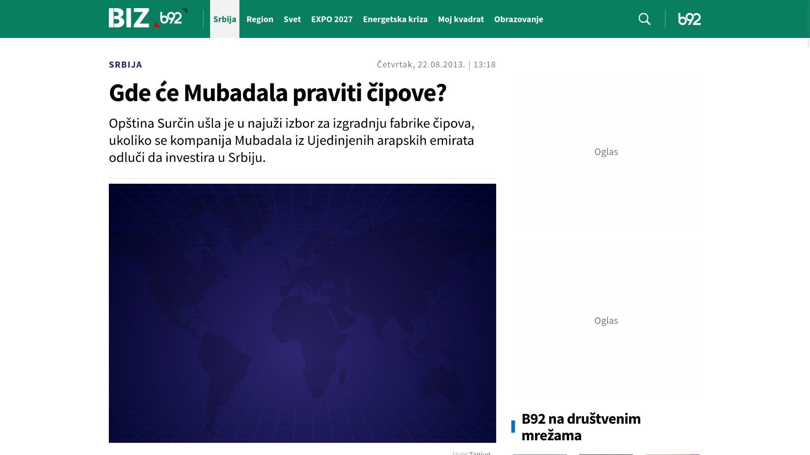
Покушаји — наравоученија
Фабрика чипова — без шанси. Слушати "струку"!
Пројектовање има макар неке изгледе за успех!
- Све фирме код нас послују искључиво у областима пројектовања и верификације.
- Већина фирми данас у страном власништву.
- Ипак, већина запослених домаћи држављани.
- Неки значајни играчи променили власника.
- Ипак је то објективан показатељ вредности.
- Екосистем далеко мањи од ИКТ тј. софтвера.
- Сви скупа вероватно око хиљаду инжењера.
Пут развоја индустрије чипова
Стратегија развоја полупроводничке индустрије
- Идентификација пар кључних подобласти:
- Нпр. енергетска електроника, сензори, оптоелектроника/фотоника, вештачка интелигенција, EDA софтвер, IP, и слично.
- Доношење Стратегије на државном нивоу као и акционог плана за њено спровођење.
Стратегија развоја ПП индустрије
Саветодавно државно тело за њено доношење.
Неопходна укљученост сва 4 кључна чиниоца:
- држава
- представници фирми и привредних друштава
- представници академских институција
- дијаспора
- Формирање CCC налик онима по ЕУ
- Оснивање Института за пројектовање ИК
- Реорганизација и ојачавање високог образовања у области полупроводника и укљученост привреде у факултетске курсеве.
Хвала на пажњи!
Владимир Миловановић
vlada@kg.ac.rs
064/5679234
Центар за интегрисане системе
Катедра за електротехнику и рачунарство
Факултет инжењерских наука Универзитета у Крагујевцу